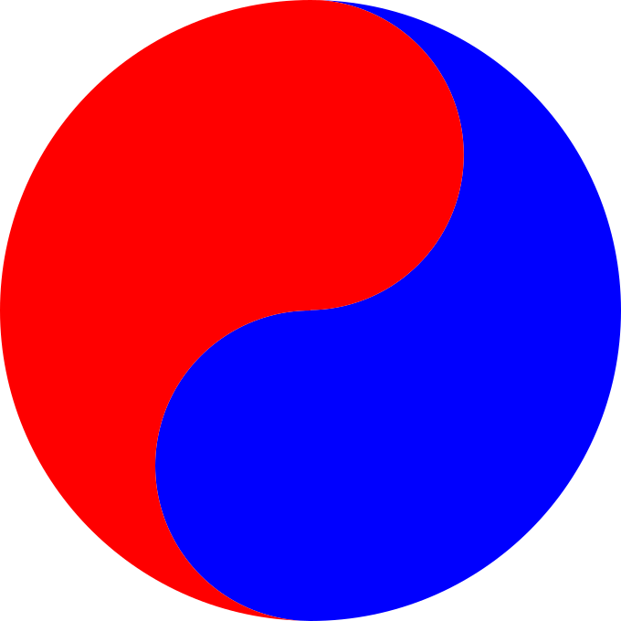

Qunnect4 is a quantum adaptation of the classic game Connect 4, designed to illustrate the counterintuitive aspects of quantum phenomena such as superposition, collapse, and entanglement.
In this game, a red-blue yin yang symbol  represents a superposed token, simulating a bichromatic photon in a superposition of two energy states - or colors. When a superposed token is measured, it collapses to or .
Tokens are grouped in pairs. A pair of tokens, named with same greek letter, are entangled. In other words, if one token is measured and collapses to , the other token will collapse to simultaneously, and vice versa.
A player places a pair of entangled tokens each turn. This is different to Connect 4, in which only one token is placed.
To prevent a cycling condition, where one player always collapses the tokens placed by the other, a player is not allowed to collapse an unmeasurable token, represented by a gray out yin yang symbol . An unmeasurable token becomes measureable after its row or column is fully occupied. This rule ensures a fair and balanced gameplay experience for both players.
Please let me know if you have any questions or comments.
Enjoy the game and have fun!